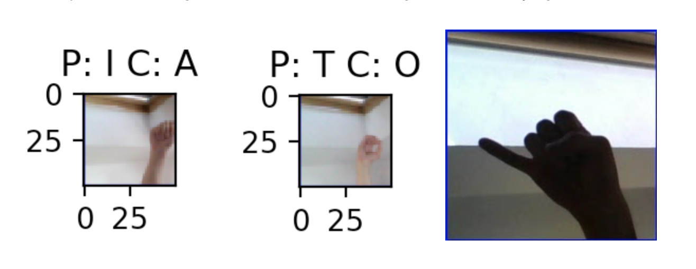
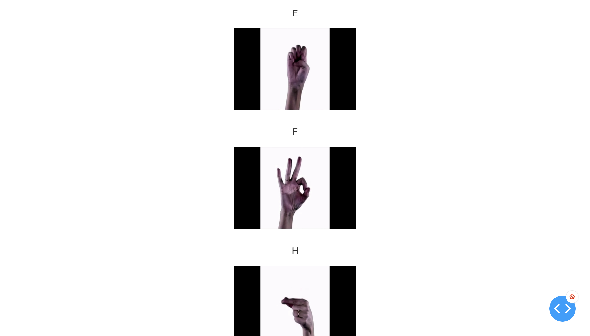

Translating Sign Language Video Into English
Geonhui Lee
Muddassir Bahri
Neil Patel
Rishabh Ghora
Saahil Yechuri
Fall 2020 CS 4476 Computer Vision: Class Project
Georgia Tech
Abstract
The main motivation behind translating American Sign Language into English is to provide a computational means of translating ASL without the need for a human interpreter. There are many use cases for such a technology including easier communication for those who are hearing impaired. Additionally, we intend to improve on current sign language translation computing solutions by expanding to video inputs and suggesting solutions for signs that involve a long gesture rather than a still sign. We approached the first half of the project by exploring machine learning methods in order to create an image classifier. The methods we experimented with included a k-nearest neighbors algorithm, a support vector machine algorithm, and through deep learning with a convoluted neural network. We then compared the accuracy as well as the speed of these three approaches to determine the best model to implement in our final product. From the results obtained in this report, it was found that a CNN built with 8 convolutional layers and trained on 2,700 images per class produced the best results. We additionally created a method to split our input video into images of all the frames that we then predicted on using our trained model. Finally, we created a web interface that showcased our project by taking an input video, splitting the video into frames, and predicting on these frames to translate the ASL video to English.Teaser figure
Figure 1. Image frames of ASL signs we will be translating
The main idea behind our project is to separate an input video into keyframes that will be distinct hand signs in ASL. We will then use machine learning to translate these images into their correct classification. Right now we are limited to the 26 letters in the alphabet and 3 other signs for space, nothing, and delete. We will discuss further experimentation for translating more signs and incorporating more cases in the future work section.
Introduction
American Sign Language (ASL) is the dominant version of sign language used by hearing-impaired communities in the U.S. and Anglophone Canada. As such, there is a plethora of video content that uses ASL to convey information to people in these communities. The objective of our project is to examine and contrast the different techniques used to translate these videos into English letters, which would let those unfamiliar with ASL to also understand the content of these videos. We plan to implement a key frame detector that can take in video formats like mp4 and produce RGB frames that correspond to a unique ASL hand sign. Then, we will apply different machine learning techniques to these frames and analyze the performance metrics produced by our results. Based on these results, improvements were made to the algorithms as described in the Approach section below.Approach
Our approach for the project was to experiment with different machine learning methods in order to produce the best accuracy in terms of unseen images by the models. In order to remain consistent among different methods we used the same dataset [1], obtained from the ASL alphabet dataset on Kaggle, in our separate methods. With 87,000 images, our dataset includes 29 classes: 26 letters and 3 other terms: space, delete, nothing, each with 3000 images. The frameworks we used for the machine learning aspect of this project were TensorFlow [2] and scikit-learn [3].Next, we developed a frame splitter that could split an input video into frames as images using OpenCV [4]. Finally, we created a web interface to showcase our project using Dash/Plotly [5].
kNN
Because the ASL language had a subtle difference without a significant difference in the hand's shape, we thought that each image was essential to link the test image to the correct ASL language. Therefore, we picked the Tensorflow implementation of the kNN algorithm as the classification method. The problem that we faced was calculating the distance between the test image with 87,000 images. To solve this problem, we improved the algorithm. If the distance currently being measured was greater than the previously measured one, the process was stopped, and the next step was taken.SVM
Our motivation to experiment with a support vector machine was to see it could learn enough to classify our images with a certain degree of reliability. We initially considered this approach as SVMs are effective with high dimensional data and are relatively more memory efficient than other approaches. Additionally, they have been known to be implemented for image classification tasks. For our implementation, we chose histogram of oriented gradients (HOG) and flattening the image as our methods of feature extraction to encapsulate images as vectors. Using the scikit-learn library, we first preprocessed the whole dataset of images into a feature matrix where rows correspond to the combined features (HOG and flattened colors) extracted from individual images. Since we only used a portion of the entire dataset for this experiment (~8700 images) we found that the number of features in the matrix for each image was much larger than the number of images we had. To perform another round of dimensionality reduction, we performed a PCA transformation on the matrix to only keep the features that were the most significant. Splitting the partial dataset used into 80-20 train-test partitions, we trained our support vector classifier model.CNN
The convolutional neural network approach was to create a neural network and train with optimal parameters in order to find the best accuracy. This was explored with different parameters and neural network builds. More importantly, CNN’s learn feature detection through hidden layers while each layer increases the complexity of the learned features. This makes deep learning very accurate for computer vision tasks, essentially the task at hand. However, CNN did come with its own challenges, the biggest being easily overfitting the data. We used Tensorflow for the CNN classification task and built our final models by creating a neural network with 8 convolutional layers.Key Frame and Subtitler
The key frame detector and video subtitler were implemented in the same function using existing packages like cv2 and moviepy [6]. The function starts by dividing the input video into evenly spaced frames and storing it into a list. The spacing is determined by another input variable known as the frameDivider, which is just an integer that is divided into the total number of frames. After storing every frame with its corresponding frame time, the frames are cropped to contain only the hand sign so that the translating algorithms can correctly identify the hand sign. This is done by identifying the hand sign’s bounding box using cv2’s implementation of template matching. A default template is available for use, but there is an option to manually create a template. We then make use of our translating algorithms to convert the cropped frames into English letters. Since we originally stored the frames times along with the frames, we can use these times and the translated letters to form a list of subtitles. Finally, the moviepy package was used to generate clips equivalent to the number of letter changes found in the video. These clips were then assembled into a new subtitled video.Experiments and results
kNN
We used 87,000 training images when implementing the kNN algorithm, so we believed the accuracy would be great, and we spent a lot of effort reducing the time to calculate the distance between the test image with 87,000 training images. As a result, the kNN algorithm we improved had a shorter computation time than the original algorithm. However, what we missed was how close we were to consider the training images from the test image. We took the short distance, and as a result, the accuracy was unavoidably low, below 40%.
Figure 2. Confusion matrix where blue and orange represent 1, white represents 0.
(Blue - Correctly Matched, Orange - Incorrectly Matched)
SVM
We implemented our preprocessing and SVM classifier using the pandas, numpy, and scikit-learn libraries. To save the length of training time and processing resources, we only used 300 images from each class to compose our dataset of images (8700 images), which is 10% of the entire dataset we had available. Even still, the training ran for ~2 hours. To ensure the model was not overfitted, we ran k-fold cross validation with k=10 and found that the accuracy for the model was 46%. This score is low but considering the size of the dataset used for the experiment, the simple approach, and number of classes, it is not insignificant.CNN
The dataset consists of 3000 images per class all of size 200x200. Since, with image classification it does not hurt the accuracy when considering smaller images and saves a significant amount of training time we resized these images to 50x50 when training. Initially we split this with an 80/20 set for 2400 training images and 600 testing images per class. We tried to train this model with these parameters but this led to overfitting. This is observable from the figures below as the validation accuracy was not increasing as training accuracy was increasing. The disparity between these two lines demonstrate signs of overfitting. Additionally, the loss was not converging either.Figure 3. Accuracy and loss functions in first 2 trials indicate overfitting
In order to combat overfitting we introduced various adjustments to our model including adding a Gaussian noise layer, adding a dropout layer, data augmentation, which meant randomly applying small zooms and shifts to our images to improve accuracy when the model encounters an unseen image (testing image).
However, these methods had very little significance to improving accuracy, accuracy still hovered around 60-70% on the testing data. To visualize what was causing this we plotted the images that the model was having trouble classifying.

Figure 4. Incorrect classifications and example of hard to classify image (P is predicted class and C is actual class)
Figure 4. Incorrect classifications and example of hard to classify image (P is predicted class and C is actual class)
Notice that in these images the sign is not in the center of the image and another scenario was that the sign was very dark in the lighting. Additionally, these images were located near the ends of the data directories, making them more likely to be in the testing set and not in the training set. Since we knew that ideally our input would be clear images positioned in the center of the screen we moved on to reducing our dataset to get better results in terms of testing accuracy. However, with that being said in the next half of the project we will try to improve the model to recognize these harder images by including more of these cases in the training set, increasing the size of the training set, and including more data augmentation. The table below contains the results of the final 3 models we tested for this experiment. These were run on the same data but with the first 1200 images per class split 80/20 for training and testing. The unseen accuracy column depicts accuracy when being exposed to these harder cases mentioned above, while testing accuracy represents easier to identify images with clear lighting and being centered in the middle of the image. However, even though the model is not performing exceptionally well with these cases, when predicting on the testing set in the kaggle dataset which only has 29 images in order to encourage testing with live images, the models predicted all of them correctly in 2 cases and just one wrong in the other case.
Figure 5. Table of results from 3 different CNN models

Figure 6. Accuracy and loss functions of CNN model with RMSprop, CNN model with Adam, and VGG model with Adam, respectively.
When using the 3 layer CNN with Adam optimizer we were receiving poor results in terms of predicting on images unseen by the model. To combat this we increased the image size of our training images to 64x64. Furthermore, the dataset was all on the same background so when the previous models were exposed to signs on a different background they performed poorly. To handle this we implemented a preprocessing stage for the images by applying a Sobel filter from OpenCV on each image before running it through the model. Additionally, we built a new CNN with 8 layers including data augmentation and dropout. Finally, we increased our training set to include more challenging images such as in a darker lighting and not centered on the screen. The results from our final model are shown below where testing accuracy is the same thing as unseen image accuracy from the table above.
Figure 7. Table of results from 8 layer CNN model
Figure 8. Accuracy and loss functions of CNN model with 8 layers.
Qualitative results
kNN
Figure 9. Correct and incorrect case for kNN
SVM
Figure 10. Correct and incorrect cases for SVM
CNN
Figure 11. Correct predictions on Kaggle test dataset with CNN with Adam optimzizer
Figure 12. Random correct predictions on test dataset with CNN with Adam optimzizer
Figure 13. Random incorrect predictions on test dataset with CNN with Adam optimzizer
Key Frame and Subtitler
The first result that would come from this system would be the interval frames and their respective cropped signs. Two examples of successfully cropped frames can be shown here:
Figure 14. Correctly cropped frames from video
Once these frames were cropped and stored, the selected classifier would attempt to predict the letter that the hand sign was trying to represent. Some of the predictions made by the classifier can be shown here:
Figure 15. Predictions from cropped images
Website Screenshots

Figure 16. Website screenshots
Figure 16. Website screenshots
Conclusion and future work
The experimentation results were not surprising. At the outset, we predicted that the classical techniques (SVM and kNN) would perform much poorer than the deep CNN model. Yet we learned a lot from exploring each of these classifiers and comparing them. For the kNN approach, since we set the distance to be short, the results were perhaps not great. To take one example, the letter P made an actual outcome of O, unlike expected, due to a difference of 0.05%. Because we used the entire 87,000 image dataset, the model performance could be improved if the distance parameter was properly tuned. The SVM approach could have been improved upon if the entire dataset were used instead of only a portion. Additionally, during the image preprocessing, we only used HOG and color features but if we had included LBP (local binary pattern) feature extraction, the SVM could have learned to distinguish between the ASL signs in the classification space more accurately. From the CNN approach, we learned what types of images would be easier to classify and intend to format our input to this style to ensure accurate classification. Additionally, we learned what types of images are not classified easily, in which case we improved the model by adding training data and data augmentation. We learned a lot about our dataset. The class for nothing is really important for our problem as the model will be able to classify when there are no signs in the input, which relates to the keyframes of a video as some frames may not have any signs and the model will be able to accurately detect that.We found that there were a few difficulties in our idea. For one, splitting the video into frames allowed for a lot of frames that were in the motion of switching from letter to letter. Some of these in motion frames received inaccurate predictions with high confidence, larger than 99%, that threw off our system. Additionally, there was a large inconsistency to these frames making it difficult to develop a method to separate still frames from moving ones. Another issue we ran into is the differentiation of signs depending on the signer. For example, in our dataset the signs for M and N were very different from the M and N signed in the video. Additionally, our G and H signs from the dataset were flipped in the video. We were under the impression the signs wouldn’t be flipped and be universal which led us to not flip images in the training set. However, we corrected this issue by manually flipping these portions of the video. One more thing that is important to mention is that we manually cropped the portion of the video with regards to the signs. To handle this in a more dynamic fashion future work can include object detection to detect where the hand of the signer is in order to crop a square with only the hand in the frame.
Overall, the largest problem in our project was the differentiation in signs from videos compared to that of the dataset. This is because the dataset includes only still images of one person doing sign for these letters. This was causing the model to have difficulty in predicting on some of the frames. This seemed largely due to differences in the angle of the camera shot in the dataset versus the video and with differences in the signs themselves. For potential future work, it would be useful to include a wider variety of signs in the dataset for each letter that would include multiple people to account for differences in accent or dialect as well as multiple camera angles on signs. Additionally, future work could involve training on video segments with a 3D convolutional neural network approach rather than still images, which would largely assist in being able to detect different signs, especially signs that require motion such as J, Z, M, and N in videos. Another possibility would be to condense frame subsequences within the input video to a series of motion history images which could be further recognized as hand sign actions. Furthermore, expanding to such a dataset would allow us to increase the scope of our project to include a larger variation of ASL signs rather than simply letters.